Centro
R. Washington Luiz, 335
Centro · Petrópolis, RJ
CEP 25655-007
- Rodízio, à la carte e delivery
- Área kids e sorveteria Sorvettile's
- Estacionamento pertinho do salão
Dom a qui 17h – 23h
Sex e sáb 17h – 00h
Prefere ligar? (24) 2242-0053
Petrópolis · desde 2011
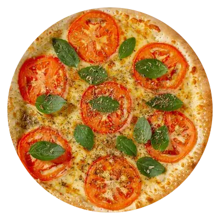
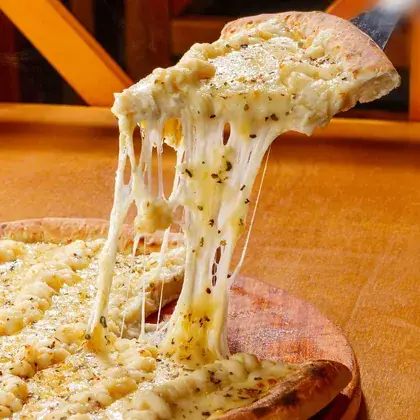
Rodízio completo com refrigerante e sorvete liberados, à la carte no salão e delivery quentinho na sua casa. Duas unidades oficiais em Petrópolis.
Quem faz
A Sottile's começou pequena e virou ponto de encontro. Hoje são duas casas na cidade, mais de 80 sabores entre salgadas e doces, e um rodízio em que refrigerante e sorvete entram junto — sem letra miúda.
Fina na borda, cheia no meio, quente na mesa ou na sua porta. É por isso que mais de 700 pessoas já pararam para avaliar a casa, e a média ficou em 4,5.
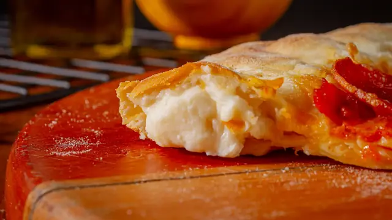
Direto do forno
Fotos das nossas pizzas, feitas na nossa cozinha. O sabor você escolhe no cardápio.
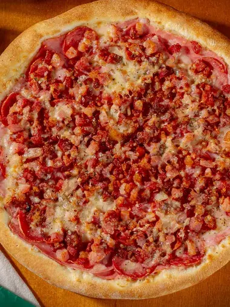
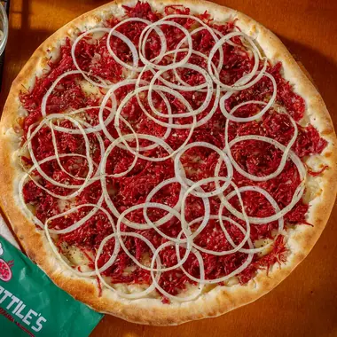
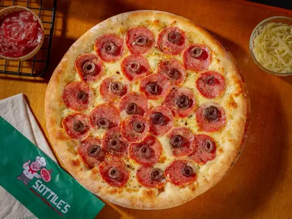
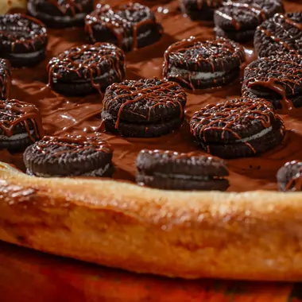
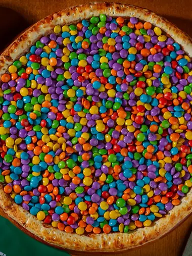
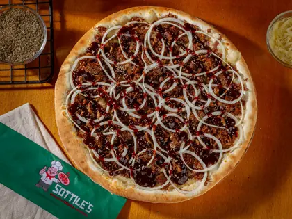
São 58 sabores salgados, 19 doces, sobremesas e bordas recheadas. Tudo com preço por faixa de cor e tamanho, do pequeno de 25 cm ao hiper de 45 cm.
Abrir o cardápio completoComo funciona
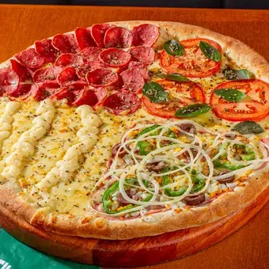
Preço único · só no salão do Centro · tudo incluso
Você senta e a pizza vem até a mesa, salgada e doce, sem contar fatia. Refrigerante ou suco e o sorvete da Sorvettile's já estão inclusos no preço. Bom para família grande e mesa cheia.
Ver horários das unidades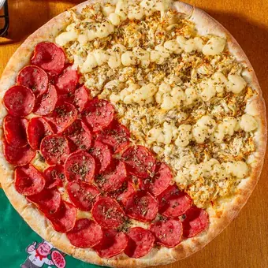
No salão do Centro ou no delivery · você escolhe
Prefere pedir só a sua? Escolha entre mais de 80 sabores, do tamanho pequeno de 25 cm ao hiper de 45 cm, com borda recheada se quiser caprichar.
Abrir o cardápio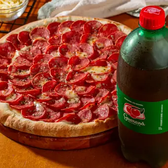
Em Petrópolis · pedido pelo WhatsApp
Manda a mensagem, escolhe o sabor e acompanha o pedido pela conversa. A pizza sai do forno e vai embalada para chegar quente na sua casa.
Pedir agora no WhatsAppUnidade Centro
Mesas grandes, área kids com piscina de bolinhas e a Sorvettile's, nossa sorveteria dentro da loja. Enquanto a criança brinca, a mesa dos adultos rende.
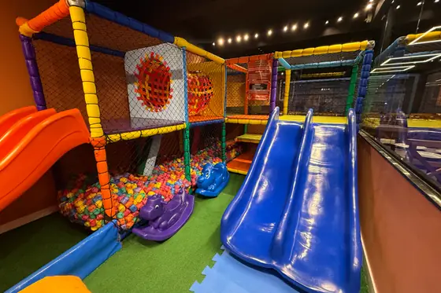
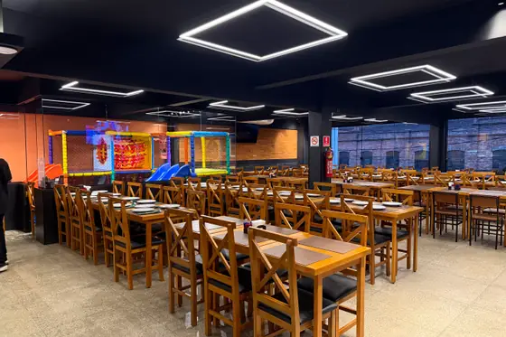
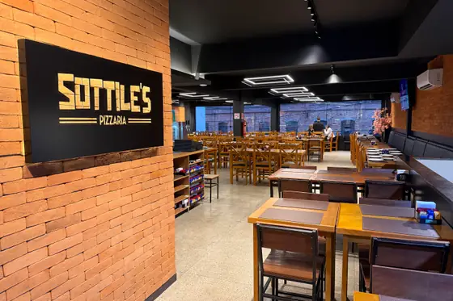
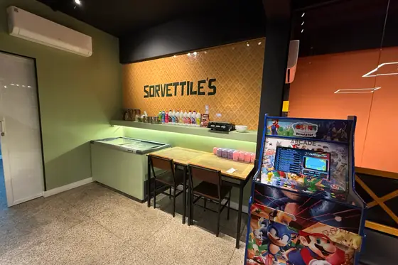
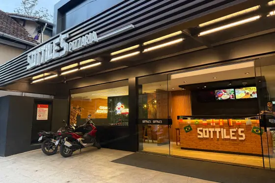
Rodízio e à la carte no salão do Centro. Para grupos, dá para reservar mesa pelo WhatsApp.
Falar com a unidade CentroO cardápio
Salgadas, doces, sobremesas, bordas recheadas e a tabela de preços por tamanho. Tudo numa página só, com busca por ingrediente.
Ver o cardápio completoOnde estamos
A Sottile's Pizzaria funciona no Centro e no Alto da Serra, em Petrópolis. Qualquer outro estabelecimento que use o nome Sottile's não faz parte da nossa marca, do nosso cardápio e da nossa cozinha. Na dúvida, é só perguntar pra gente.
R. Washington Luiz, 335
Centro · Petrópolis, RJ
CEP 25655-007
Dom a qui 17h – 23h
Sex e sáb 17h – 00h
Prefere ligar? (24) 2242-0053
R. Teresa, 1295
Alto da Serra · Petrópolis, RJ
CEP 25625-027
Dom a qui 17h – 23h
Sex e sáb 17h – 00h
Prefere ligar? (24) 2231-1207
Delivery e pedidos
Manda a mensagem na nossa central de pedidos, escolhe o sabor e acompanha tudo pela conversa. Sem app, sem cadastro, sem enrolação.
Prefere falar direto com uma unidade?
O tempo varia com o bairro e o movimento da noite. Assim que você manda a mensagem, a gente confirma na hora uma previsão real para o seu endereço — nada de estimativa automática.
A pizza só entra na embalagem depois de sair do forno, e a embalagem segura o calor. As rotas são curtas dentro de Petrópolis justamente por isso.
As fotos deste site são das nossas pizzas, feitas na nossa cozinha. O recheio é o mesmo que está descrito no cardápio, sem miniatura de propaganda.
Não. O rodízio é uma experiência de salão, com pizza saindo do forno direto para a mesa e sorvete liberado. No delivery você pede à la carte, do tamanho que quiser.
Nos dias mais cheios, sexta e sábado, vale garantir. Chame no WhatsApp da unidade Centro e a gente organiza. O rodízio e o salão são só lá; o Alto da Serra atende delivery e retirada.
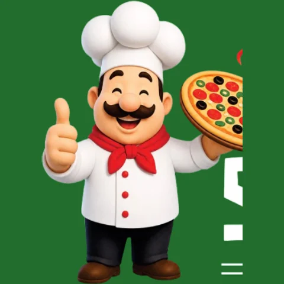
@sottilespizzaria
Sabor novo, bastidor de cozinha, promoção relâmpago e a mesa cheia de todo mundo. Se você quer saber o que está saindo do forno hoje, é lá que acontece.